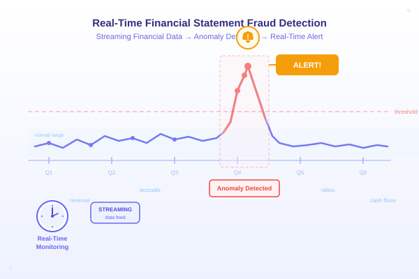
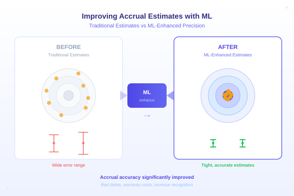

Publications
Journal Articles

Predicting Material Misstatements Using Machine Learning
The Accounting Review, 1–38.
Paper
Using Blockchain and Smart Contracts to Combat Greenwashing in Environmental Disclosures
Accounting Horizons
Environmental, Social, and Governance Taxonomy Simplification: A Hybrid Text Mining Approach
Journal of Emerging Technologies in Accounting, 20(1), 305–325.
Internet of Things and Blockchain-Based Smart Contracts: Enabling Continuous Risk Monitoring and Assessment in Peer-to-Peer Lending
Journal of Emerging Technologies in Accounting, 20(2), 181–194.
Book Chapters
Chapter 12. The Use of Social Media in Accounting Studies
Exogenous Data in Accounting and Auditing. Emerald Publishing.
Working Papers

Towards Real-Time Financial Statement Fraud Detection Using Machine Learning R&R, FT 50
SSRN

Using Machine Learning to Improve Accrual Estimates R&R, FT 50
Audit Partner Characteristics in Engagement Assignment and Audit Quality — an Explainable AI Approach
A Greenhouse Gas Emission Tracking System (GETS) for Climate-Related Disclosures R&R
A Large Language Model Framework for Detecting Greenwashing Risks Minor Revision
Audit Data Analytics with ML, Data Visualization, and Auditor's Judgment R&R
Work in Progress
Detecting Account-level Misstatements
Ride the Hype: Capturing AI Washing in Patents
Re-engineering Materiality